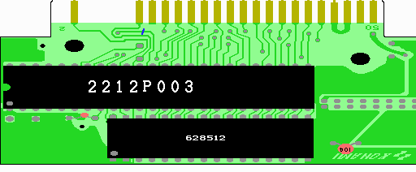

７．SRAMの取り付け
いよいよ半田付けです。結構楽しいです。各チップの向きなどは、実体図を参考にして下さい。
SRAMの3〜30ピンが、ＲＯＭのあった場所の1〜28ピンに収まるようにとりつけます。
実際に穴に入れるのは、3〜15、17〜29と32ピンです。
1、2、16、30、31ピンは水平に伸ばす格好になります。
628512の3〜15、17〜29と32ピンを半田付けします。
これで回路図に緑色でかかれた、SRAMの3〜15、17〜21、23〜29、32番ピンの接続が完了しました。

 次へ
次へ